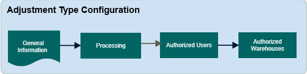

An adjustment type record defines the parameters for a specific inventory management transaction.

Adjustment type: This field is used to define an inventory management record, which allows product adjustments at the location level.
Minimum and Maximum Quantity Fields: Set limits on the quantity of the product that can be adjusted.
For negative adjustments, enter negative values (e.g., -1, -2, -3).
Entering a positive value will increase the product quantity at the location instead of removing it.
Note: The system always uses the base unit of measure (UM) for these values.
Adjustment Class buttons: Select an adjustment class to specify how the system processes the adjustment internally. Note that this class affects the processing method, not the type of adjustment. Regardless of the value in the Adjustment Type field, the system will always perform an adjustment when using this record.
Initiation Type: Choose whether adjustments should be based on an item/location combination or by license plate.
Allow for Frozen Locations: Enable this option if adjustments should be allowed for locations with a "Frozen" status. Frozen locations typically contain inventory that cannot be allocated or are empty. However, you can enable this option to adjust product or change its status.
Include in Interface Uploads: Select this button to interface records for this adjustment type back to the ERP system.
Create Work: Select this button, if you want the system to generate work for transactions using this adjustment type.
You can also specify a Work Creation Master that the system will follow when creating work.
If no Work Creation Master is specified, the system will use all configured masters in priority order.
Note: Work creation applies only to positive/negative adjustments, basic transfers, and warehouse transfers.
Select which users are authorized to perform this adjustment type on the Inventory Adjustment screen or Warehouse Mobile application.
Choose which warehouses are eligible for this adjustment type on the Inventory Adjustment screen or Warehouse Mobile application.